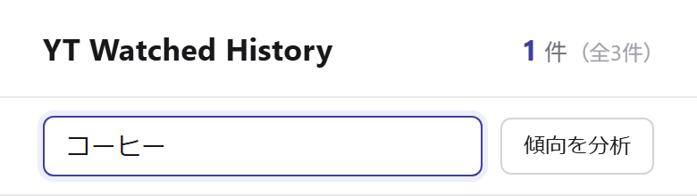
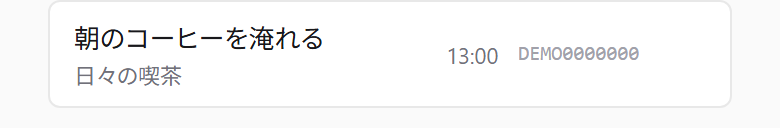

YWH
YWH 12:00視聴済み
12:00視聴済み朝のコーヒーを淹れる
日々の喫茶
YouTube向けのChrome拡張です。
無料 · パソコン版 Chrome 向け
YWHを使った表示例（合成データ）
6本のうち、視聴済みの3本を隠した状態です。
YouTubeのホームを模した説明図です。動画・履歴は合成データ、画像は生成素材です。実際のYouTube画面ではありません。
また観たい日に。
記録した動画は、タイトルやチャンネル名で検索できます。
履歴の使い方Topic チャンネルなどの履歴から、アーティスト別のランキングを表示します。
分析の「合計時間」は動画の長さの合計です。実際に聴いた時間ではありません。

「朝のコーヒーを淹れる」が一致

再生の終了や一覧の視聴進捗などから記録します。視聴済みとみなす進捗の割合は、設定で調整できます。
記録された動画を一覧から隠します。検索結果だけは残す、といったページ別の設定もできます。
拡張機能のアイコンから非表示を OFF にできます。消さずに残したい場合は、薄く表示することもできます。
導入前に
保存と通信
視聴履歴と設定はブラウザー内に保存します。保存した履歴を開発者のサーバーへ送ることはありません。
動画情報の取得や、自分で実行する高評価の同期などで YouTube と通信します。
クレジットの補完・再点検を自分で実行した場合は、曲名・アーティスト名などを使って MusicBrainz に問い合わせることがあります。
プライバシーポリシーを読むYouTube Watched Hider
Chrome ウェブストアで内容と権限を確認してから、「Chrome に追加」で導入できます。